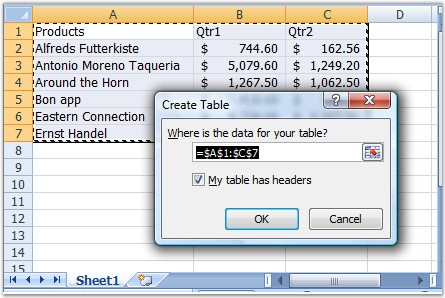

In Excel, Tables can be inserted by selecting Table option from the Insert menu.
Table Creation By Using XlsIO
XlsIO provides support to read and write tables in a spreadsheet. The table is added as an IListObject to the worksheet. The input data to the table must be a range of data existing in the worksheet. IListObject returns the collection of tables in the worksheet.
|
[C#]
// Create Table IListObject table1 = sheet.ListObjects.Create("Table1", sheet["A1:C8"]); |
|
[VB.NET]
' Create Table Dim table1 As IListObject = sheet.ListObjects.Create("Table1", sheet("A1:C8")) |
Total Row
You can add the "Total Row" to any table by accessing the Table Columns. Columns in the tables are accessed by using the index. It is possible to set "Totals Calculation" to the Total Row cells by using the ExcelTotalsCalculation enumerator. These cells will be updated once they are calculated.
|
[C#]
// Total Row table1.Columns[0].TotalsRowLabel = "Total"; table1.Columns[1].TotalsCalculation = ExcelTotalsCalculation.Sum; table1.Columns[2].TotalsCalculation = ExcelTotalsCalculation.Sum; |
|
[VB.NET]
' Total Row table1.Columns(0).TotalsRowLabel = "Total" table1.Columns(1).TotalsCalculation = ExcelTotalsCalculation.Sum table1.Columns(2).TotalsCalculation = ExcelTotalsCalculation.Sum |
Formatting Table
You can apply built-in styles for the tables by using the TableBuiltInStyles enumerator of XlsIO.
|
[C#]
// Apply built-in style. table1.BuiltInTableStyle = TableBuiltInStyles.TableStyleMedium9; |
|
[VB.NET]
' Apply built-in style. table1.BuiltInTableStyle = TableBuiltInStyles.TableStyleMedium9 |
Reading Existing Table
XlsIO provides support to read an existing table from the spreadsheet. It can be accessed from the sheet by using the "Table Index".
|
[C#]
IListObject table = sheet.ListObjects[0]; table.BuiltInTableStyle = TableBuiltInStyles.TableStyleMedium1; |
|
[VB.NET]
Dim table As IListObject = sheet.ListObjects[0] table.BuiltInTableStyle = TableBuiltInStyles.TableStyleMedium1 |

Figure 86: Table inserted by using Excel